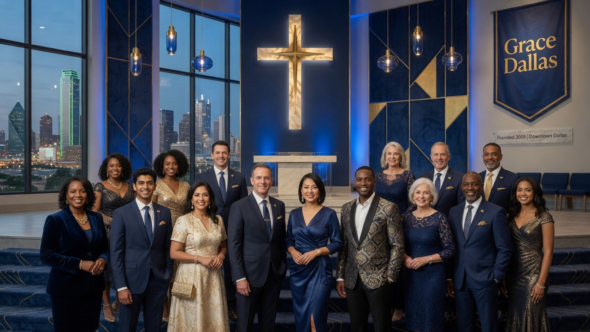

Searching for a spiritual home in North Texas is rarely a single click. Families look for churches in Frisco and McKinney, then narrow by neighborhood, youth programs, bilingual worship, or outreach—often in the same evening. This guide is written for that journey: practical, specific to Dallas–Fort Worth, and honest about what a good fit feels like on a real Sunday.
Upper Room DFW is a church directory for Texas’s largest metro. Whether you are evaluating churches near me, comparing listings across the metro, or leading a congregation that wants to be found by neighbors searching for churches in DFW, the goal is the same—clear information, verified listings, and trustworthy next steps.
Finding your way around Frisco
When families look for churches in Frisco and McKinney, they usually care about three things: how far the drive really is, whether kids and youth will feel safe and known, and whether the teaching and community feel like home. A clear church directory helps you compare those pieces side by side instead of opening twenty tabs and hoping one campus sticks.
Upper Room DFW is built for that job in the Dallas–Fort Worth metroplex. We organize verified church listings so a parent in Plano, a student in Denton, or a new hire relocating to Fort Worth can review worship style, youth ministry, bilingual services, and outreach without starting from scratch every Sunday.
People also ask practical follow-ups: “Is there a Spanish service near me?”, “Which churches have secure kids check-in?”, and “Where can I serve in the city this month?” Those are real life questions—not marketing slogans—and they deserve honest, local answers.
Quick brief before you visit
Keep this short list handy while you explore options related to frisco & mckinney churches for growing families.
- Know your season: a young family, empty-nester couple, and college student need different things on the same Sunday.
- Name your place: list your city or corridor (Plano, East Fort Worth, Mid-Cities) so you are not comparing impossible commutes.
- Look for proof: service times, parking notes, kids security, and real outreach matter more than polished slogans.
- Trust verified listings: complete profiles and honest program tags save you from surprise “we don’t have that” moments in the lobby.
- Take next steps slowly: browse → shortlist → visit twice → join a group or serve team.
Fast-growth city challenges
Portables, multi-service schedules, and volunteer shortages are normal in high-growth suburbs. Ask how the church trains greeters and kids volunteers at scale.
Browse Frisco listings and McKinney listings.

A practical visit plan for Frisco families
- Define three non-negotiables (kids ministry, language, worship style, or outreach focus).
- Build a shortlist of three churches using the Upper Room DFW directory filters for Frisco and nearby suburbs.
- Confirm times, parking, and kids check-in on the listing page before you leave home.
- Visit the main service once; return for a mid-week group or serve opportunity.
- Debrief as a household: Did greeters help? Did teaching connect? Would you invite a neighbor?
- If you lead a church, claim or register your profile so newcomers can find accurate information.
Most people do not choose a spiritual home from a single ad. They compare, ask friends, look up churches in DFW again, and need confirmation that a congregation is real, welcoming, and active in the city.
For pastors and church administrators in Texas
If you serve a congregation in Dallas, Fort Worth, Arlington, Plano, Frisco, Garland, Irving, Denton, McKinney, or any North Texas city, your public listing is part of hospitality. Incomplete details create friction for the very people you want to welcome.
Upper Room DFW offers verified profiles, clear church pages, and a member portal so staff can update times and programs without waiting on a web agency. Premium plans help multi-campus and growing churches stay visible in one of America’s densest church markets.
Treat the directory like infrastructure: accurate data, honest program tags, and photos that look like your actual Sunday—not a stock-photo fantasy. That is how families find you with confidence.
FAQ: local questions we hear every week
What is the best way to find Frisco churches in Frisco?
Start with a verified directory that covers the full metro, not only one denomination. Cross-check service times on the church’s own site, then visit. Maps help with proximity; a good guide helps with fit.
Is Upper Room DFW a church?
No. Upper Room DFW is a local church directory and platform helping families discover churches across Texas’s DFW region and helping congregations publish accurate listings.
How can churches in Texas help newcomers find them?
Keep Google Business Profile details consistent, publish clear service times, welcome honest reviews, and maintain a complete directory listing with youth, bilingual, and outreach tags when those ministries are real.
Should we rely only on maps and social media?
Maps are great for “how far.” Friends and social posts help with “who do I know.” A directory plus a thoughtful visit plan still does the best job of connecting both.
Explore next: Start from the Upper Room DFW homepage, compare options in the submit a church listing, and ground your research with multicultural communities (Wikipedia) for broader context beyond a single search for churches near me.
Bottom line: Families choose churches through usefulness, accuracy, and local clarity—not hype. Use Upper Room DFW as your research hub, visit with intention, and keep your own listing current if you serve a church in Texas.
Neighborhood corridors and commute reality in Frisco
Commutes shape church choice as much as theology for many DFW households. A family in North Dallas may hesitate to drive to South Fort Worth every week; a Keller campus may serve a different weekday rhythm than downtown Dallas. When you evaluate churches in Frisco and McKinney, map the real door-to-door time for Sunday school drop-off and mid-week groups—not just pin-to-pin distance.
Upper Room DFW organizes listings by city and area so you can compare Arlington, Plano, Frisco, McKinney, Mesquite, Grand Prairie, Richardson, Carrollton, Euless, and Lewisville without losing the metro-wide picture. That dual view—your neighborhood and the whole metro—is how locals actually decide.
Specific place names help more than vague phrases like “great churches nearby.” Knowing what a first-time visitor should expect in each corridor of the Dallas–Fort Worth metroplex saves disappointment and wasted Sundays.
Finally, revisit your shortlist every few months. New campuses launch, service times shift, and bilingual options expand. A living directory plus practical guides keeps both seekers and church leaders aligned with how people look for churches in Texas today.